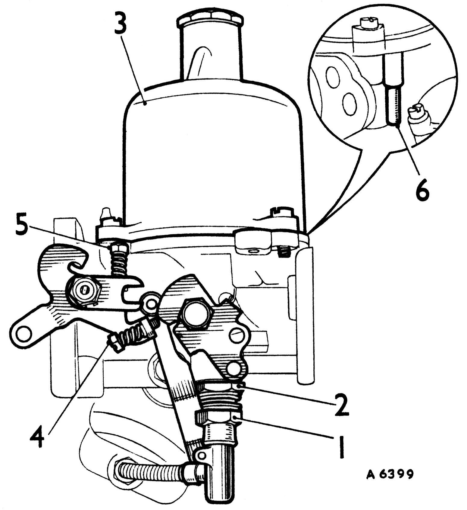
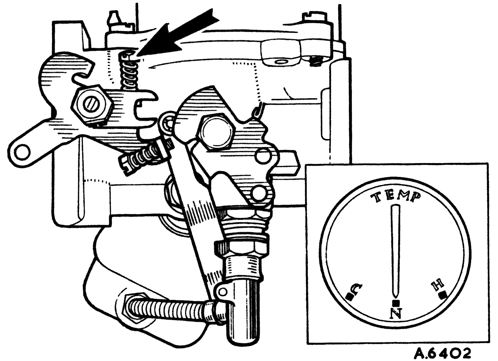
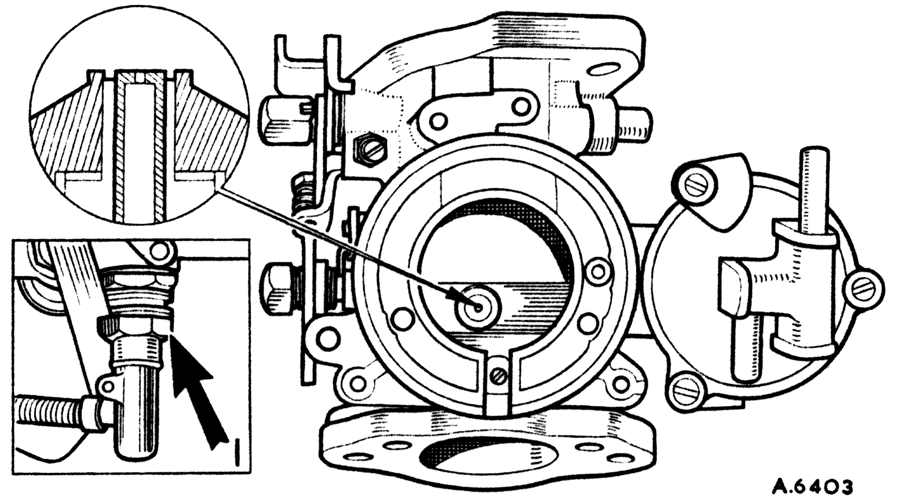
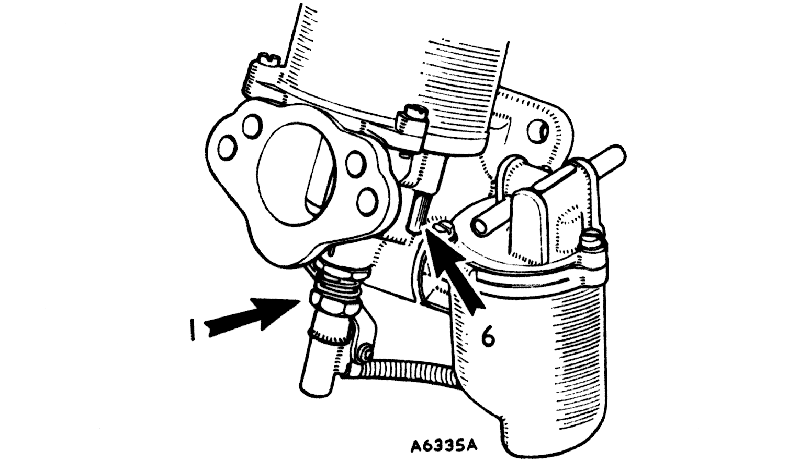
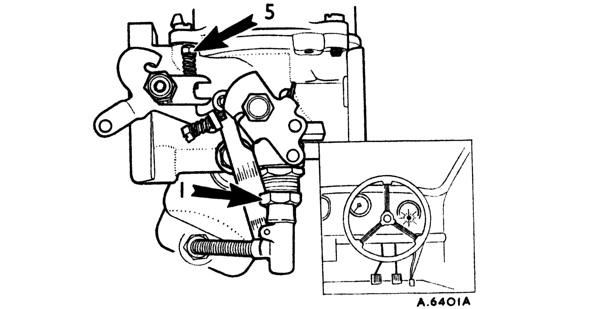

|

The Type HS Carburetter
- Jet adjusting nut.
- Jet locking nut.
- Piston/suction chamber.
|
- Fast-idle adjusting screw.
- Throttle adjusting screw.
- Piston lifting pin.
|
Tuning
Single carburetters

1
- Warm engine up to normal temperature.
- Switch off engine.
- Unscrew the throttle adjusting screw until it is just clear of its stop and the throttle is closed.
- Set throttle adjusting screw 1-1/2 turns open.
|
|

2
- Mark for reassembly and remove piston/suction chamber unit.
- Disconnect mixture control wire.
- Screw the jet adjusting nut (1) until the jet is flush with the bridge of the carburetter or fully up if this position cannot be obtained.

3
- Replace the piston/suction chamber unit as marked.
- Check that the piston falls freely onto the bridge when the lifting pin (6) is released. If not, see items 15, 16, and 17.
- Turn down the jet adjusting nut (1) two complete turns.

4
- Restart the engine and adjust the throttle adjusting screw (5) to give desired idling as indicated by the glow of the ignition warning light.
- Turn the jet adjusting nut (1) up to weaken or down to richen until the fastest idling speed consistent with even running is obtained.
- Readjust the throttle adjusting screw (5) to give correct idling if necessary.
|